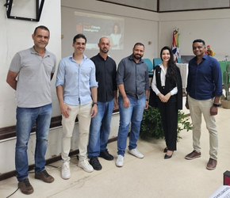
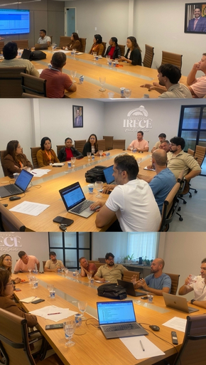

Entrar no site
Sobre o Projeto
Cidades Inteligentes Municípios
Transformando a gestão pública com tecnologia, inovação e impacto social.
O projeto Cidades Inteligentes Municípios é uma iniciativa do Instituto Federal da Bahia - Campus Irecê
que visa apoiar prefeituras na transformação digital da gestão pública. Através de acordos de cooperação técnica, o IFBA desenvolve,
implementa e adapta soluções tecnológicas publicas que atendem às necessidades reais dos municípios, com foco na eficiência administrativa,
transparência e melhoria dos serviços ao cidadão.
Mais do que digitalizar, o projeto promove uma mudança de cultura, capacitando servidores e promovendo inovação com baixo custo e impacto direto na qualidade de vida da população.



Objetivo
O projeto Cidades Inteligentes Municípios tem como missão promover uma transformação profunda na administração pública local por meio da inovação tecnológica e da colaboração entre instituições de ensino e gestão municipal.
Seus objetivos são guiados por valores como eficiência, inclusão, transparência e impacto social. A seguir, destacamos os principais pilares que norteiam essa iniciativa:
Depoimentos
Tenho certeza que o novo Sistema Eletrônico de Informação vai otimizar o trabalho de todos os setores e secretarias do municipio e ainda gerará uma economia de uso de papel.
Essa iniciativa me proporciona aplicar os conhecimentos adquiridos em sala de aula. Este projeto tem sido fundamental para mim, pois está me capacitando profissionalmente.
Tive a oportunidade de trabalhar com o SEI quando gestor público. Trata-se de uma tecnologia transformadora na gestão documental. Parabenizo o IFBA e a Prefeitura de Irecê pela implantação desse sistema inovador.
Para Contato, Dúvidas ou Sugestões
Tem alguma dúvida sobre o projeto ou deseja implantar soluções no seu município?
Nossos pesquisadores estão disponíveies para apoiar prefeitos, secretários, servidores e cidadãos
interessados em transformar sua cidade por meio da inovação e da tecnologia.
exercitation ullamco laboris nisi ut aliquip ex ela reprehenderit
exercitation ullamco laboris nisi ut aliquip ex ela reprehenderit